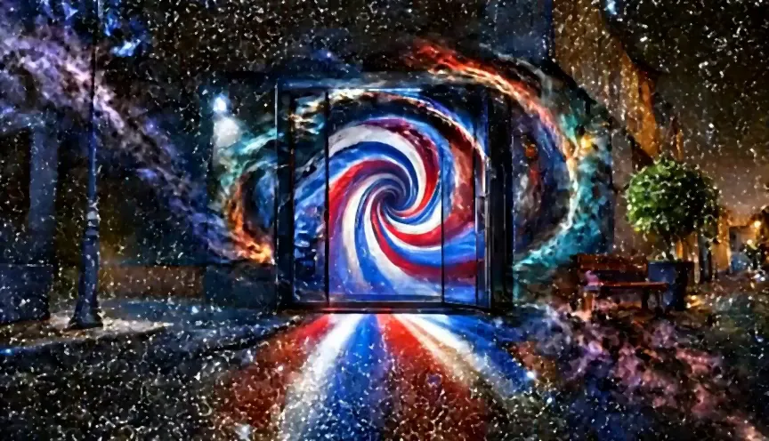
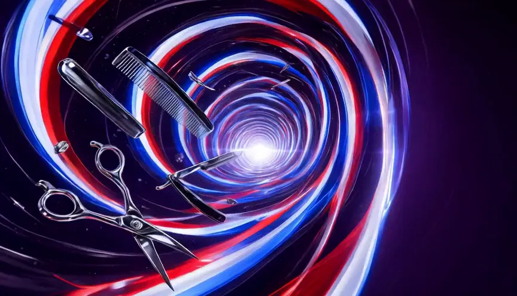
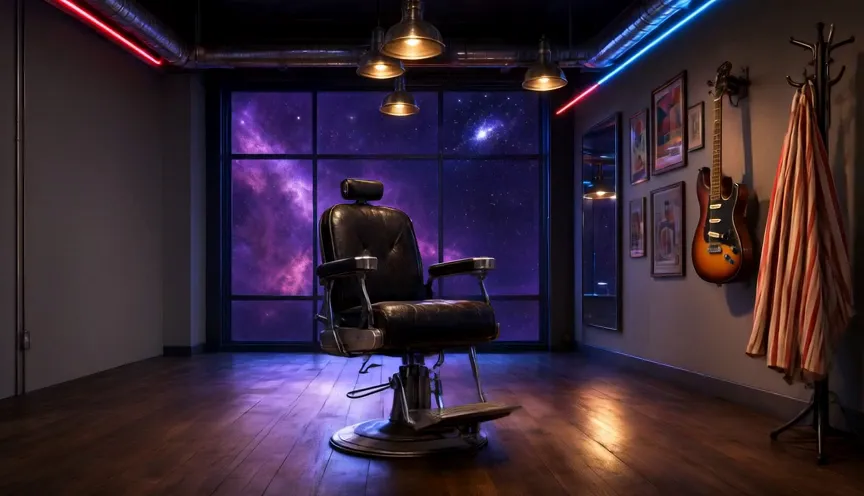

01 · Sant Vicent del Raspeig
Rumbo a la Tierra
Atravesamos el espacio hasta un punto concreto: Av. Ancha de Castelar, 187.
La única barbería de su universo.
Desliza para entrar ↓
01 · Sant Vicent del Raspeig
Atravesamos el espacio hasta un punto concreto: Av. Ancha de Castelar, 187.
02 · El portal
Degradados, barba, color y diseño. Cruza el portal y deja el resto del mundo fuera.
03 · Solo existe la barbería
4,8 ★ con 356 reseñas en Google. Lunes a viernes, 10:00–13:30 y 16:30–20:30.
Llamar · 966 17 09 82
Atravesamos el espacio hasta un punto concreto: Av. Ancha de Castelar, 187.

Degradados, barba, color y diseño. Cruza el portal y deja el resto del mundo fuera.

4,8 ★ con 356 reseñas en Google. Lunes a viernes, 10:00–13:30 y 16:30–20:30.
Av. Ancha de Castelar, 187, Local 4 · 03690 Sant Vicent del Raspeig · 966 17 09 82 · Instagram · Ver la web